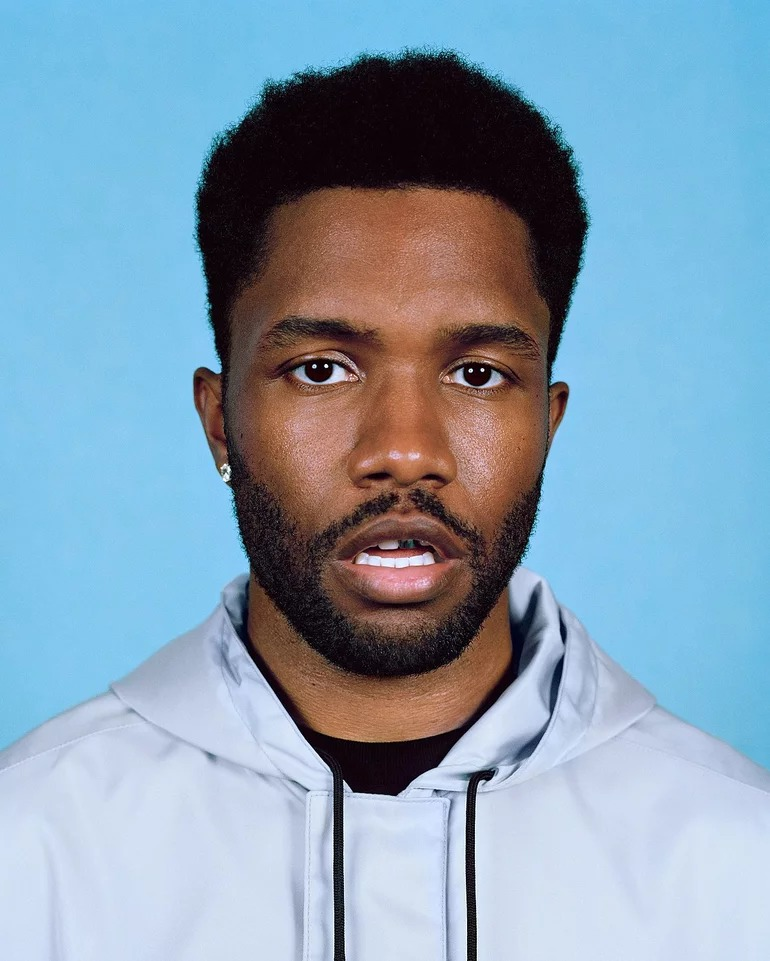
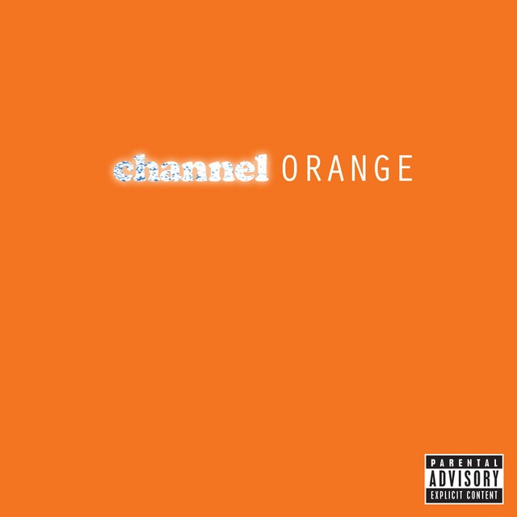
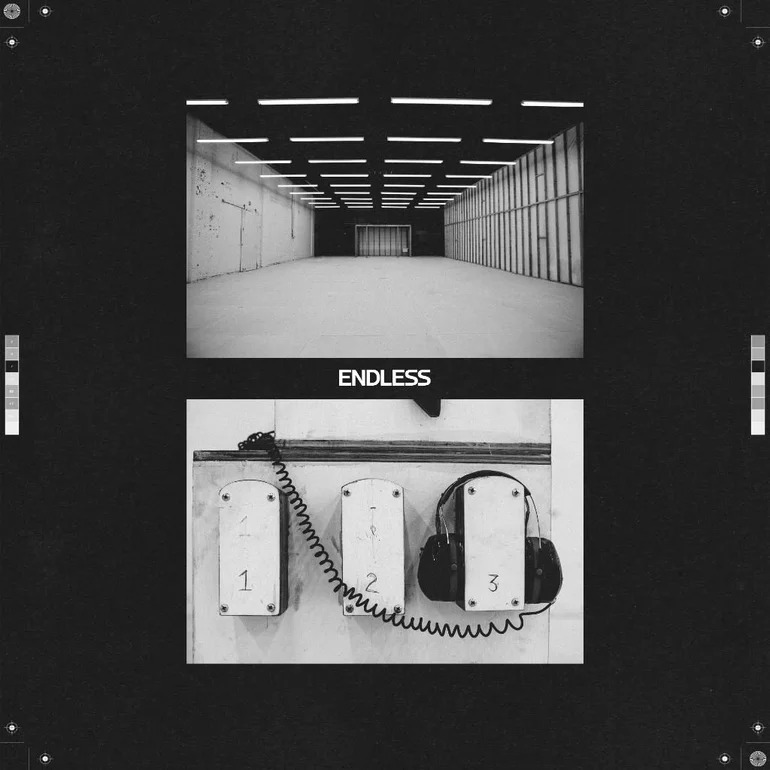
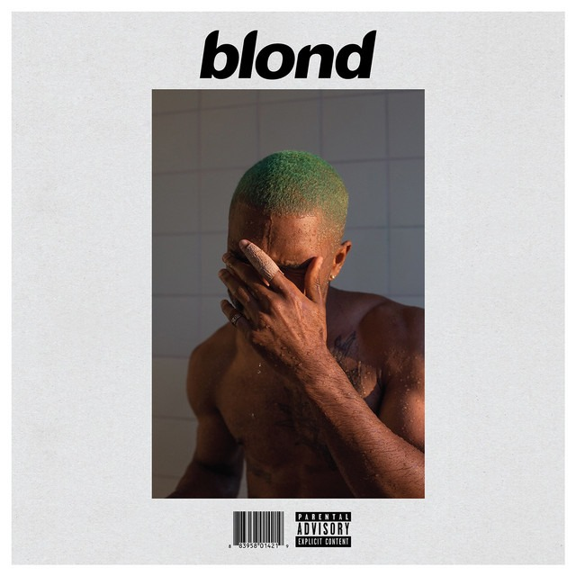

Frank Ocean (nascido Christopher Edwin Breaux em 28 de outubro de 1987, Long Beach, Califórnia, EUA) é um cantor, compositor e produtor americano. Antes de se tornar famoso como artista solo, trabalhou como ghostwriter para estrelas como Justin Bieber, Beyoncé e John Legend. Membro do coletivo Odd Future, Frank se destacou por seu R&B introspectivo e emocional, misturando soul, jazz e pop experimental em álbuns aclamados pela crítica.
"There's just some magic in truth and honesty and openness." — Frank Ocean
| Capa | Álbum | Ano | N° de Faixas | Gênero |
 |
Nostalgia, Ultra (mixtape) | 2011 | 11 | R&B / Soul |
 |
Channel Orange | 2012 | 17 | R&B / Soul |
 |
Endless (álbum visual) | 2016 | 18 | R&B / Ambient |
 |
Blonde | 2016 | 17 | R&B / Indie |